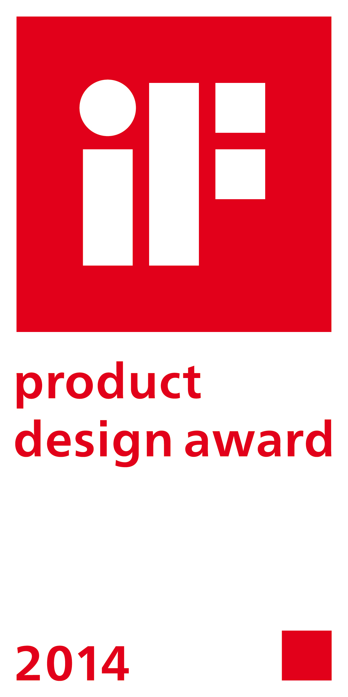
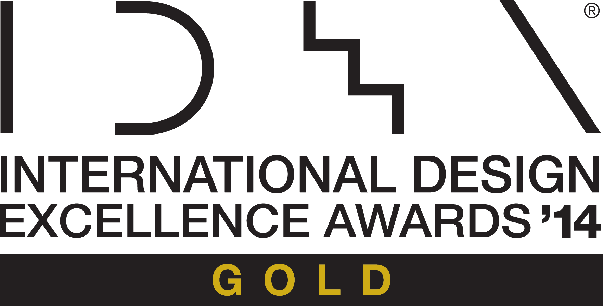
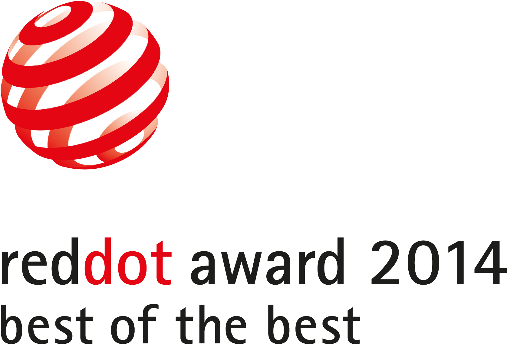
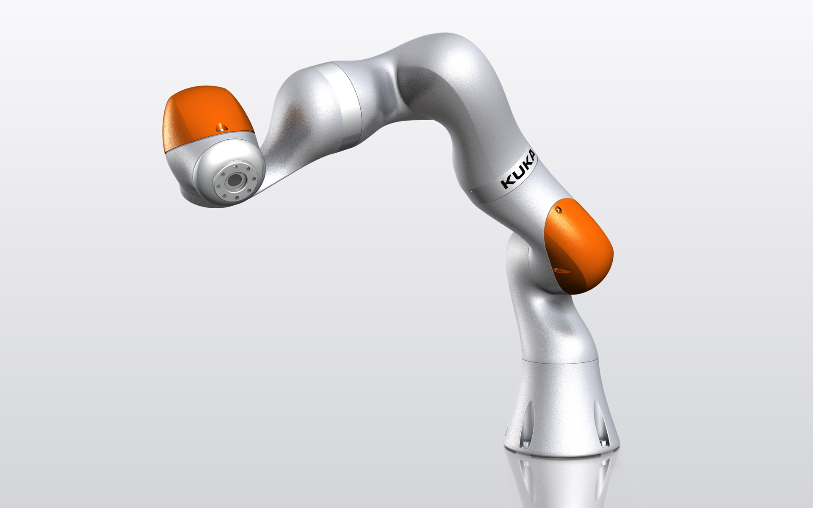
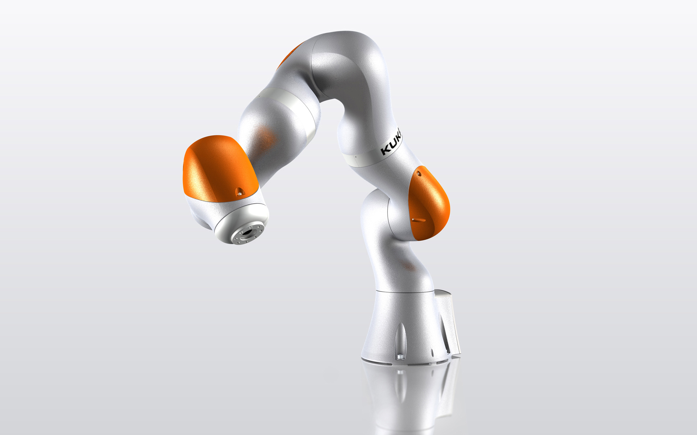
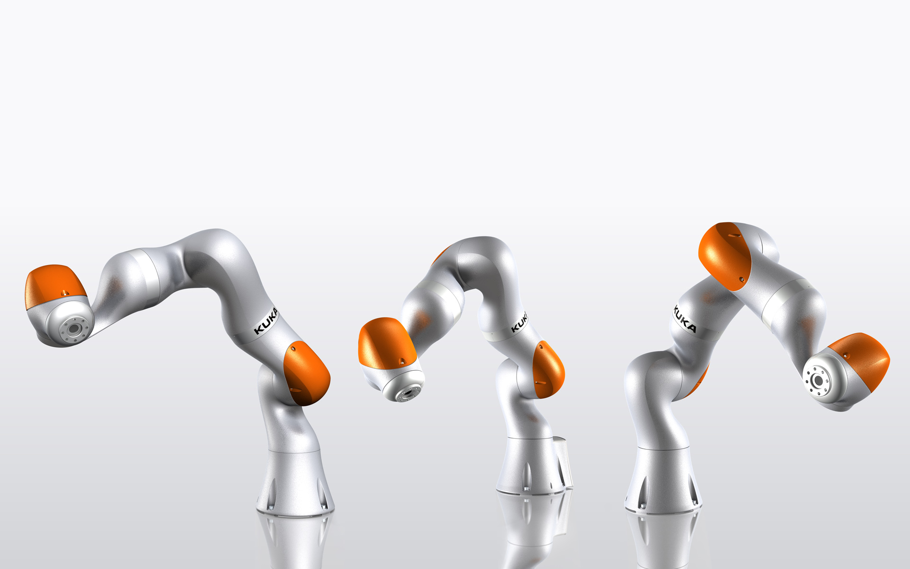
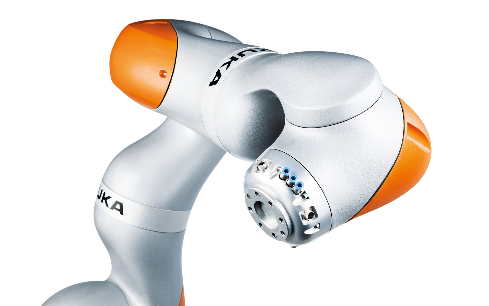
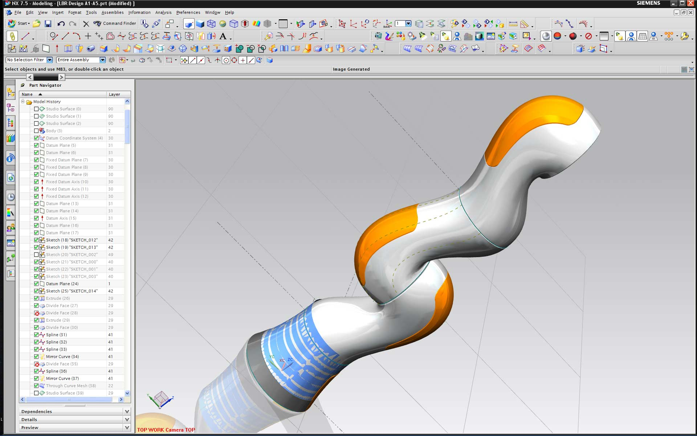
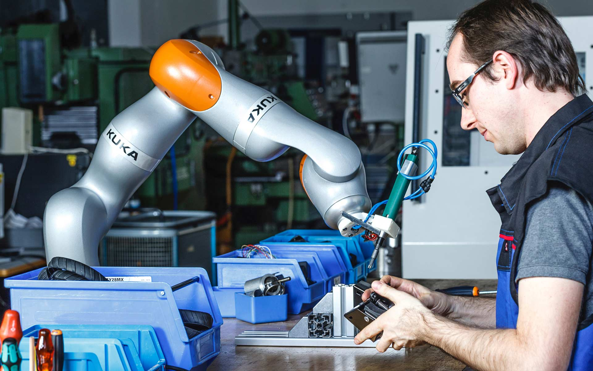
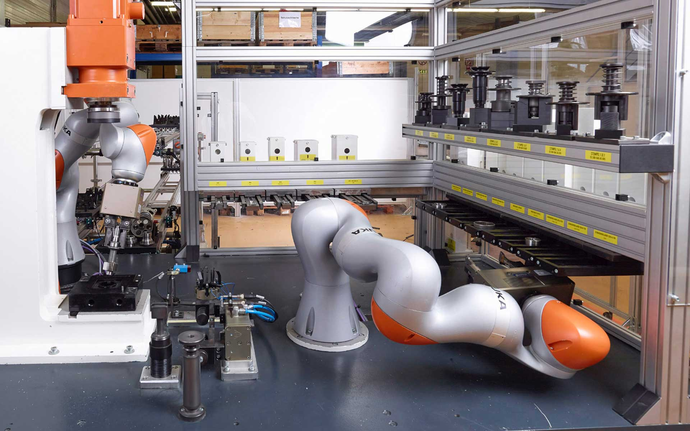

KUKA LBR iiwa
Lightweight Robot
KUKA LBR iiwa
Leichtbauroboter
Statement IDEA USA:
"The term robot has so much baggage attached to it. I hear “robot” and immediately think “Lost in Space”
or “the Jetsons” in some form. This is the first modern robotic arm that I can actually say challenges
that preconceived notion for me and begins to suggest how robotic devices can be super functional yet
aesthetically attractive at the same time. The iiwa has an anthropomorphic character that would make me
feel more comfortable with it in a non-industrial setting."
— David Peschel, IDSA, Executive Director of Design and Innovation, Speck Design, USA
The lightweight robot opens a new chapter in the cooperation between human operators and robots. It
feels its way towards objects, allows itself to be gently pushed away by people, and withdraws from them
automatically when getting in direct touch. Each of the seven axes has sensors of its own. They make the
„Intelligent Industrial Work Assistant“ extremely precise and sensitive, the robot learns by allowing
itself to be guided. The LBR fulfills the highest safety regulations and therefore may cooperate
directly with people without any protection fence.
User-friendliness and avoiding risks of injury and contusion have been the main topics of design
consequently. The smooth, organic design is based on the human arm and reminds of muscles. It gives a
vivid and dynamic shape and shows the flexibility of the machine. The LBR-design deliberately dispenses
with hard edges. To give the robot a prominent brand recognition feature nevertheless, gentle edges
which the user doesn't feel but sees were chosen in a very flat angle. Its lightweight aluminium body
makes it fast, its slim design and the 7 axes provide an unbelievable movability. The engine covers are
heatsinks at the same time on which controllers are installed. The LBR takes over tasks in surgical
medicine as well as applications in the industry. The robot is also able to guide the human operator
through complex motion sequences and can carry out physiotherapeutic tasks in rehabilitation very well.
Its load is 7 kg and its reach 800 mm.
Selić Industriedesign service: Design concept, design consultation, design sketches, CAD design support,
CAD freeform modeling, design refinement, processing of design data for the engineering department
Statement IDEA USA:
“Der Begriff Roboter ist mit so viel Ballast behaftet. Wenn ich “Roboter” höre, denke ich sofort an „Lost
in Space“ oder “die Jetsons". Dies ist der erste moderne Roboterarm, der diese vorgefasste Meinung
tatsächlich in Frage stellt und mir zeigt, wie Robotergeräte hochfunktional und gleichzeitig ästhetisch
ansprechend sein können. Der iiwa hat einen anthropomorphen Charakter, mit dem ich mich in einem
nicht-industriellen Umfeld wohler fühlen würde.”
— David Peschel, IDSA, Executive Director of Design and Innovation, Speck Design, USA
Der Leichtbauroboter LBR schlägt ein neues Kapitel in der Zusammenarbeit von Mensch und Roboter auf. Er
tastet sich an Objekte heran, lässt sich vom Anwender sanft beiseite schieben und weicht selbstständig
vor ihm zurück, wenn er ihn berührt.
Jede der sieben Achsen besitzt eine eigene Sensorik. Sie macht den „intelligent industrial work
assistant“ extrem präzise und feinfühlig, der Roboter lernt, indem er sich führen lässt. Der LBR
erfüllt die höchsten Sicherheitsbestimmungen und darf somit ohne Schutzzaun direkt mit Menschen
zusammenarbeiten.
Anwenderfreundlichkeit und das Vermeiden von Verletzungs- und Quetschungsgefahren hatten daher von
Anfang an in der Gestaltung oberste Priorität. Das geschmeidige, organische Design ist dem menschlichen
Arm nachempfunden und erinnert an Muskeln. Das gibt dem Roboter ein lebendiges, dynamisches
Erscheinungsbild und zeigt seine Flexibilität. Der LBR kommt bewusst ohne harte Kanten aus. Um ihm
dennoch ein markantes Wiedererkennungsmerkmal zu geben, wurden sanfte Kanten in einem sehr flachen
Winkel gewählt, die der Anwender nicht spürt, aber sieht. Sein leichter Alukorpus macht ihn
antrittsschnell, seine schlanke Bauform und die 7 Achsen sorgen für eine unglaubliche Beweglichkeit.
Die Motorabdeckungen sind zugleich Kühlkörper, auf denen die Steuerelektronik montiert ist.
Aufgaben in der chirurgischen Medizin übernimmt der LBR ebenso wie Anwendungen in der Industrie. Er ist
auch in der Lage, den Menschen bei komplexen Bewegungsabläufen zu führen und kann bestens
physiotherapeutische Aufgaben in der Rehabilitation übernehmen. Die Traglast beträgt 7 kg, seine
Reichweite 800mm.
Selić Industriedesign Dienstleistung: Designkonzept, Designberatung, Designentwürfe, CAD-Design
Unterstützung, CAD-Freiform-Modellierung und Detailgestaltung, Aufbereitung von Designdaten für die
Konstruktion







Images © Selić Industriedesign
Images and videos © KUKA-Roboter GmbH